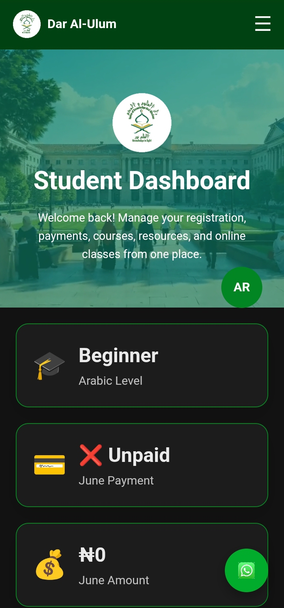
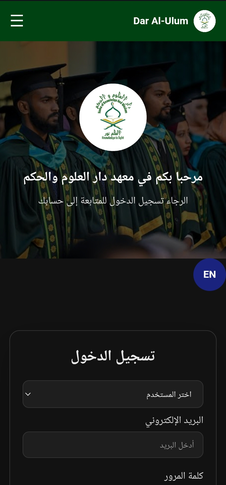
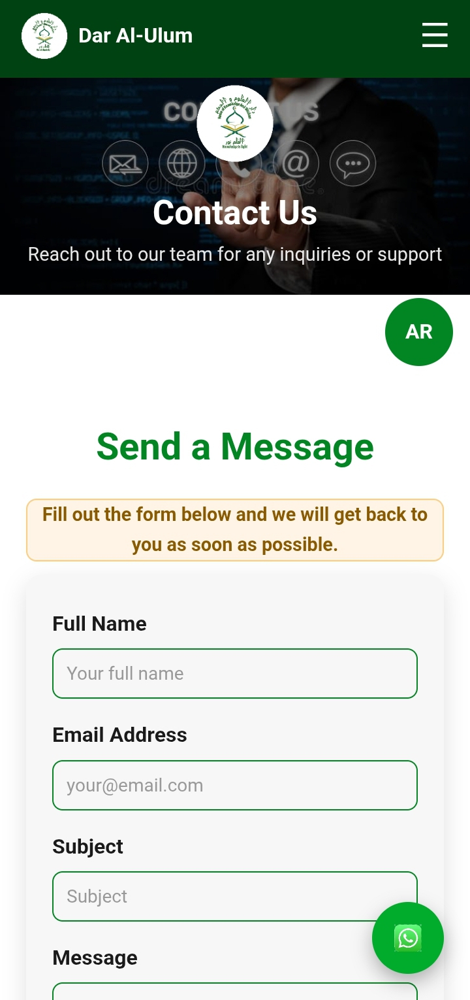

Case Study
A full-scale digital learning system built for an Arabic institute, featuring student dashboards, CBT exams, admission system, admin control tools.
Major Modules
Responsive Design
Backend Powered
Exam System
The Dar Al-Ulum Portal was designed to solve a major problem in traditional learning environments: lack of centralized digital management for students, exams, and admissions.
This system brings everything into one platform — enabling students to register, take CBT exams, receive results, and access academic resources seamlessly.
Personalized dashboard for each student with progress tracking.
Automated exam system with instant scoring and feedback.
Auto-generated admission documents for successful applicants.
Access to structured learning materials and resources.



The platform successfully demonstrates how educational institutions can streamline admissions, digitize examinations, and improve accessibility through a centralized digital ecosystem.
It now serves as a foundation for scalable educational platforms for future institutions.
I build complete educational platforms, business websites, and digital systems tailored to your needs.
Contact Me